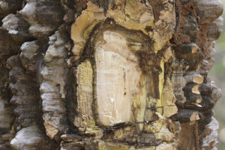
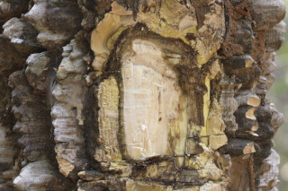
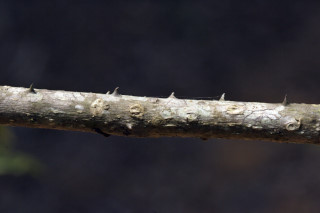
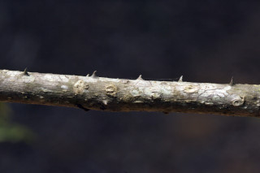

Deciduous trees ca. 12 m tall.
12 ಮೀ ಎತ್ತರದವರೆಗಿನ ಎಲೆಉದುರು ಮಾದರಿಯ ಮರಗಳು.
Deciduous trees ca. 12 m tall.
இலையுதிர் மரங்கள் 12 மீ. உயரம் வரை வளரக்கூடியது.
Trunk armed with large corky conical prickles; bark brownish, corky, yellow.
ಕಾಂಡ ದೊಡ್ಡ ಗಾತ್ರದ ಬೆಂಡು ರೀತಿಯ ಶಂಕುವಿನ ಆಕಾರದ ಕಿರುಮುಳ್ಳುಗಳ ಸಮೇತವಿರುತ್ತವೆ;ತೊಗಟೆ ಕಂದು ಬಣ್ಣದಲ್ಲಿದ್ದು ಬೆಂಡಿನ ತರಹವಿರುತ್ತದೆ.
Trunk armed with large corky conical prickles; bark brownish, corky, yellow.
மரத்தின் நடுத்தண்டின் பெரிய கார்க் போன்ற எளிதில் உதிரக்கூடிய சிறியமுட்கள் (ப்ரிக்கிள்) கொண்டவை; மரத்தின் பட்டை ப்ரவுன் நிறமானது, கார்க் போன்றது, மஞ்சள் நிறமானது.
Young branchlets terete, lenticellate, glabrous, with conical prickles.
ಎಳೆಯ ಕಿರುಕೊಂಬೆಗಳು ದುಂಡಾಕಾರ ಹೊಂದಿದ್ದುಬೆಂಡು ರಂಧ್ರಗಳ ಸಮೇತವಿದ್ದು ರೋಮರಹಿತವಾಗಿರುತ್ತವೆ ಹಾಗೂ ಶಂಕು ರೂಪದ ಕಿರುಮುಳ್ಳುಗಳನ್ನು ಹೊಂದಿರುತ್ತವೆ.
Young branchlets terete, lenticellate, glabrous, with conical prickles.
சிறியநுனிக்கிளைகள் குறுக்குவெட்டுத் தோற்றத்தில் வளையமானது, பட்டைத்துளைகள் (லெண்டிசெல்லேட்) உடையது, உரோமங்களற்றது, எளிதில் உதிரக்கூடிய சிறியமுட்கள் (ப்ரிக்கிள்) கொண்டவை.
Leaves compound, imparipinnate, alternate, spiral, clustered at twig ends; rachis canaliculate, glabrous; petiolule 0.3 cm long, canaliculate in cross section, glabrous; leaflets 15-23, opposite, 6.5-11 x 3.5-4.5 cm, oblong, elliptic-oblong, apex caudate to acuminate (acumen up to 3 cm long), base asymmetric, margin crenulate with glands at sinuses, coriaceous, sparingly glandular punctate; midrib canaliculate above; secondary_nerves 6-12 pairs; tertiary_nerves admedially ramified to broadly reticulate.
ಎಲೆಗಳು ಸಂಯುಕ್ತ ಹಾಗೂ ಅಸಮ ಗರಿ ರೂಪಿ ಮಾದರಿಯದಾಗಿದ್ದು ಪರ್ಯಾಯ ಮತ್ತು ಸುತ್ತು ಜೋಡನಾ ವ್ಯವಸ್ಥೆಯಲ್ಲಿರುತ್ತವೆಹಾಗೂ ಕುಡಿಕೊಂಬೆಗಳ ತುದಿಯಲ್ಲಿ ಗುಂಪಾಗಿರುತ್ತವೆ ;ಅಕ್ಷದಿಂಡು ಕಾಲುವೆಗೆರೆ ಸಮೇತವಿರುತ್ತದೆ ಮತ್ತು ರೋಮರಹಿತ -ವಾಗಿರುತ್ತದೆ; ;ಉಪತೊಟ್ಟುಗಳು 0.3 ಸೆಂ.ಮೀ. ಉದ್ದಹೊಂದಿದ್ದು ಅಡ್ಡ ಸೀಳಿದಾಗ ಕಾಲುವೆಗೆರೆಯನ್ನೊಳಗೊಂಡಿರುತ್ತವೆ;ಉಪಪತ್ರಗಳು 15 ರಿಂದ 23 ಇದ್ದು ಅಭಿಮುಖಿ -ಗಳಾಗಿರುತ್ತವೆ, 6.5 -11 X 3.5 -4.5 ಸೆಂ.ಮೀ ಗಾತ್ರ, ಚತುರಸ್ರ, ಅಂಡವೃತ್ತ-ಚತುರಸ್ರದ ಆಕಾರ, ಬಾಲರೂಪಿ ಮಾದರಿಯಿಂದ ಕ್ರಮೇಣ ಚೂಪಾಗುವವರೆಗಿನ ರೀತಿಯ ತುದಿ (ಅಗ್ರ 3 ಸೆಂ.ಮೀ. ವರೆಗಿನ ಉದ್ದವಿರುತ್ತದೆ),ಅಸಮ್ಮಿತಿಯಾದ ಬುಡ ಹೊಂದಿರುತ್ತವೆ, ಮತ್ತು ಕುಳಿಗಳಲ್ಲಿ ರಸಗ್ರಂಥಿಗಳನ್ನೊಳಗೊಂಡ ಸೂಕ್ಷ್ಮ ದುಂಡೇಣು -ಗಳನ್ನುಳ್ಳ ಅಂಚು, ಮತ್ತು ತೊಗಲನ್ನೋಲುವ ಮೇಲ್ಮೈ ಹೊಂದಿರುತ್ತವೆ, ವಿರಳವಾದ ಮಚ್ಚೆ ರೂಪದ ರಸಗ್ರಂಥಿಗಳ ಸಮೇತವಿರುತ್ತವೆ;ಮಧ್ಯನಾಳ ಮೇಲ್ಭಾಗದಲ್ಲಿ ಕಾಲುವೆ -ಗೆರೆಯನ್ನು ಹೊಂದಿರುತ್ತದೆ;ಎರಡನೇ ದರ್ಜೆಯ ನಾಳಗಳು 6 ರಿಂದ 12 ಜೋಡಿಗಳಿರುತ್ತವೆ; ಮೂರನೇ ದರ್ಜೆಯನಾಳಗಳ ಕವಲುಗಳು ಸಾಮಾನ್ಯವಾಗಿ ಎಲೆಗಳ ಅಕ್ಷದ ಕಡೆಗಿರುವ ಮಾದರಿಯಿಂದ ವಿಶಾಲ ಜಾಲ ಬಂಧ ನಾಳ ವಿನ್ಯಾಸದವರೆಗಿನ ರೀತಿಯಲ್ಲಿರುತ್ತವೆ
Leaves compound, imparipinnate, alternate, spiral, clustered at twig ends; rachis canaliculate, glabrous; petiolule 0.3 cm long, canaliculate in cross section, glabrous; leaflets 15-23, opposite, 6.5-11 x 3.5-4.5 cm, oblong, elliptic-oblong, apex caudate to acuminate (acumen up to 3 cm long), base asymmetric, margin crenulate with glands at sinuses, coriaceous, sparingly glandular punctate; midrib canaliculate above; secondary_nerves 6-12 pairs; tertiary_nerves admedially ramified to broadly reticulate.
இலைகள் கூட்டிலை, ஒற்றைபடை சிறகு வடிவக்கூட்டிலைகள், மாற்றுஅடுக்கமானவை, சுழல் போன்று அமைந்தவை, சிறுகிளைகளின் நுனியில் இலைகள் கூட்டமாக மற்றும் நெருக்கமாக காணப்படும்; மத்தியகாம்பு (ராக்கிஸ்) குறுக்குவெட்டுத் தோற்றத்தில் கேனாலிகுலேட், உரோமங்களற்றது; சிற்றிலைக்காம்பு 0.3 செ.மீ. நீளமானது, குறுக்குவெட்டுத் தோற்றத்தில் கேனாலிகுலேட், உரோமங்களற்றது; சிற்றிலைகள் 15-23, எதிரடுக்கமானவை, 6.5-11 X 3.5-4.5 செ.மீ., நீள்சதுர வடிவானது, நீள்வட்டம்-நீள்சதுர வடிவானது, அலகின் நுனி வால் போன்றது முதல் அதிக்கூரியது (முனை 3 செ.மீ. நீளமானது), அலகின் தளம் சமமற்றது, அலகின் விளிம்பு சிறிய பிறை போன்ற பற்களுடையது பிளவுகளில் சுரப்பிகளுடையது, கோரியேசியஸ், குறைந்தளவு ஒளிபுகும் சுரப்பி புள்ளிகளுடையது; மையநரம்பு மேற்புறத்தில் அலகின் பரப்பைவிட பள்ளமானது; இரண்டாம் நிலை நரம்புகள் 6-12 ஜோடிகள்; மூன்றாம் நிலை நரம்புகள் அட்மீடியல்லி ராமிபைடு முதல் அகன்ற வலைப்பின்னல் போன்றவை.
Inflorescence panicles, terminal or from uppermost leaf axils; flowers polygamous, greenish yellow; male and female flowers sessile
ಪುಷ್ಪಮಂಜರಿಗಳು ತುದಿಯಲ್ಲಿನ ಪುನರಾವೃತ್ತಿಯಾಗಿ ಕವಲೊಡೆಯುವ ಮಾದರಿಯವು ಎಲ್ಲದಕ್ಕಿಂತ ಮೇಲಿನ ಎಲೆಯ ಅಕ್ಷಾಕಂಕುಳಿನಲ್ಲಿರುತ್ತವೆ; ಹೂಗಳುಸಂಕೀರ್ಣಲಿಂಗಿಗಳಾಗಿದ್ದು,ಹಸಿರುಮಿಶ್ರಿತಹಳದಿಬಣ್ಣದಲ್ಲಿರುತ್ತವೆ;ಗಂಡುಮತ್ತುಹೆಣ್ಣು ಹೂಗಳು ತೊಟ್ಟುರಹಿತವಾಗಿರುತ್ತವೆ.
Inflorescence panicles, terminal or from uppermost leaf axils; flowers polygamous, greenish yellow; male and female flowers sessile
மஞ்சரி பேனிக்கிள் வகை மஞ்சரி, தண்டின் நுனியில் காணப்படும் அல்லது தண்டின் நுனியிலுள்ள இலைக்கோணங்களில் அமைந்தவை; மலர்கள் பாலிகேமஸ், பச்சை நிறமானது மஞ்சள் நிறமானது; ஆண் மலர்கள் மற்றும் பெண் மலர்கள் காம்பற்றது
Follicles, globose, apiculate; seed 1, globose, smooth, bluish-black
ಸೋತ ಫಲಗಳು ಗೋಳಾಕಾರ ಹೊಂದಿದ್ದು ಅಗ್ರದಲ್ಲಿ ಸೂಕ್ಷ್ಮ ಮೊನಚು ಮುಳ್ಳಿನ ಸಮೇತವಿರುತ್ತವೆ;ಬೀಜಗಳ ಸಂಖ್ಯೆ 1 ಇದ್ದು ನೀಲಿ ಮಿಶ್ರಿತ ಕಪ್ಪು ಬಣ್ಣ ಹೊಂದಿರುತ್ತವೆ.
Follicles, globose, apiculate; seed 1, globose, smooth, bluish-black
பாலிக்கிள், கோள வடிவமானது, நீட்சியுடையது; ஒர் விதையுடையது, கோள வடிவமானது, வழுவழுப்பானது, நீல-கருப்பு நிறமானது
 



 
